Mes expériences
Découvrez les expériences professionnelles qui ont renforcé mes compétences en Supply Chain, Production, Qualité et Amélioration Continue.
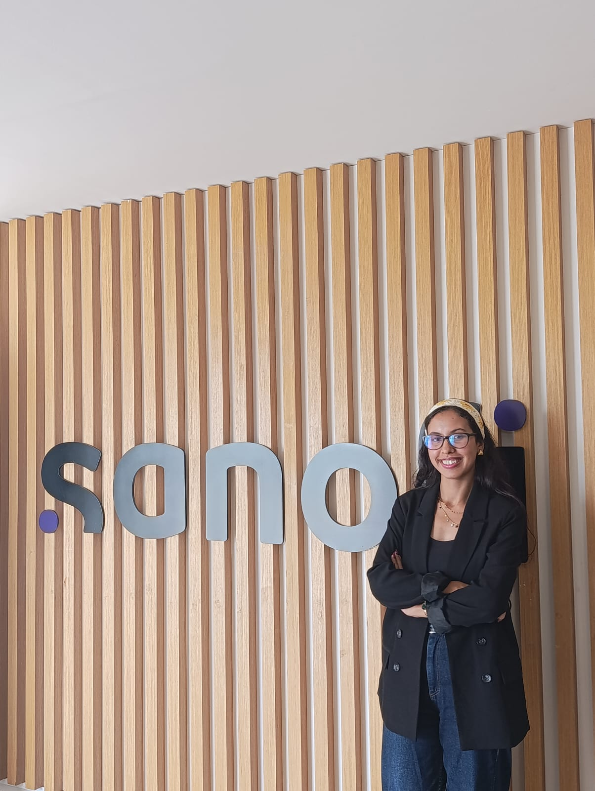
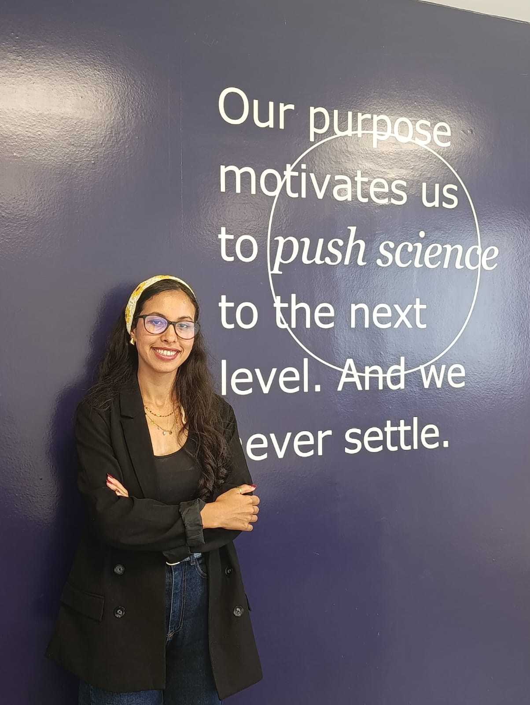
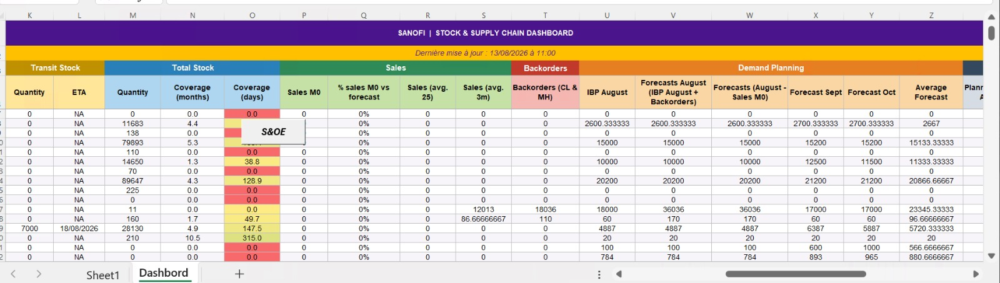
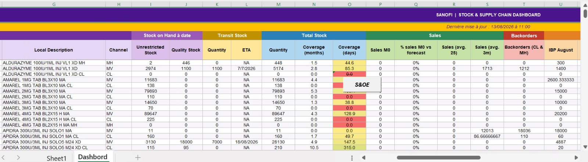
Ce dashboard est généré à partir de plusieurs sources de données grâce à un processus automatisé via VBA.
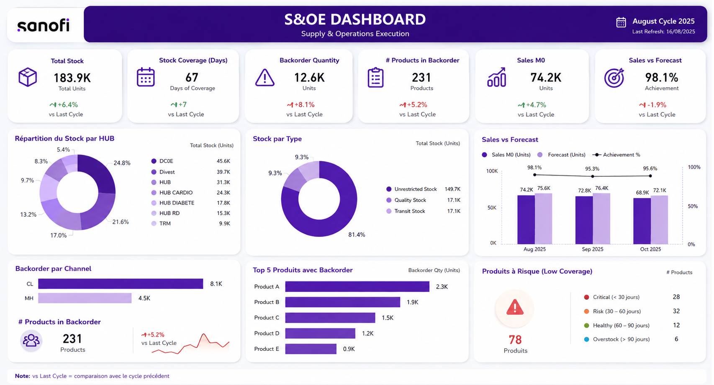
Stage effectué dans Sanofi
 Juin – Août 2026
Juin – Août 2026
Stagiaire Supply Chain – Sales & Operations Execution (S&OE) | Casablanca
Sanofi est un leader mondial de l'industrie pharmaceutique.
Projet principal : S&OE Automation Hub
Conception et développement d'une solution d'automatisation destinée à optimiser le processus de Sales & Operations Execution (S&OE). Le projet consiste à digitaliser le reporting Supply Chain afin de réduire les traitements manuels, fiabiliser les données et améliorer la prise de décision grâce à l'intégration de Excel VBA, Power Automate et d'un Dashboard interactif.
Principales réalisations :
- Analyse complète du processus S&OE et identification des opportunités de digitalisation.
- Développement d'une application Excel VBA permettant l'automatisation de la consolidation et du traitement des données provenant de SAP, IBP et de plusieurs fichiers Excel.
- Conception d'un Dashboard interactif pour le suivi en temps réel des principaux KPI Supply Chain.
- Mise en place d'un workflow Microsoft Power Automate pour l'envoi automatique des reportings.
- Optimisation du processus de reporting en réduisant significativement les tâches manuelles et les risques d'erreurs.
Autres missions réalisées :
- Saisie et traitement des commandes d'approvisionnement sur la plateforme interne de Sanofi destinées à plusieurs centres de distribution internationaux.
- Standardisation des processus : Rédaction et mise à jour de plusieurs Standard Operating Procedures (SOP) afin de standardiser les processus opérationnels du département Supply Chain.
- SAP Supply Chain : Élaboration du mode opératoire de création des clients dans SAP. Documentation du processus de gestion des IDoc. Formalisation de la procédure de facturation.
- Amélioration continue : Analyse et cartographie des processus métiers. Documentation des flux opérationnels et amélioration de leur traçabilité.
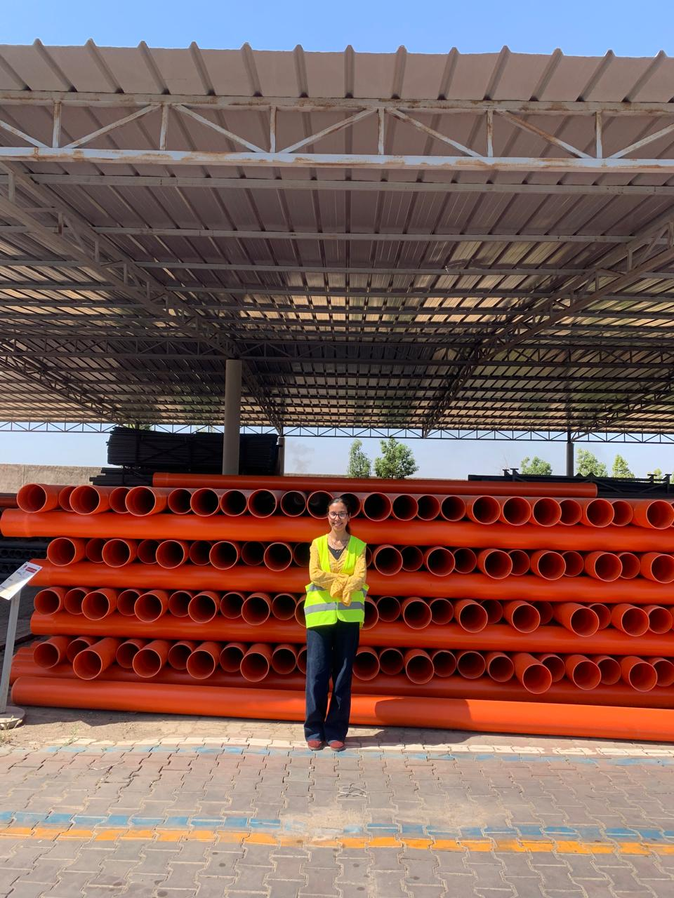
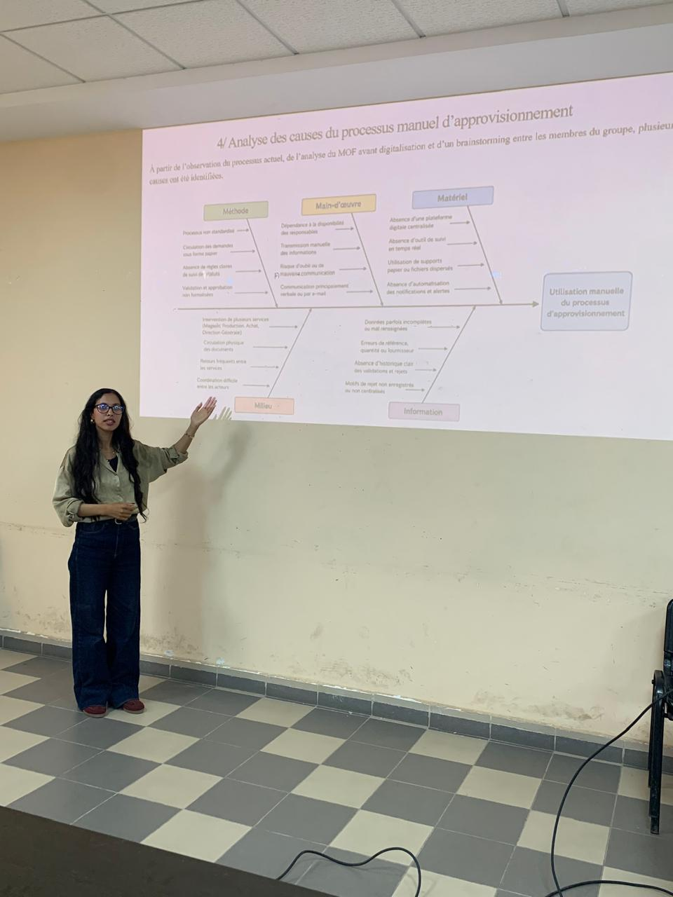
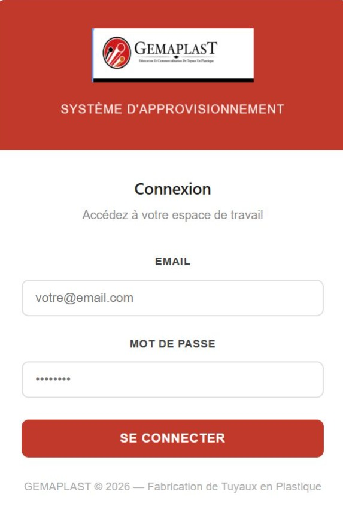
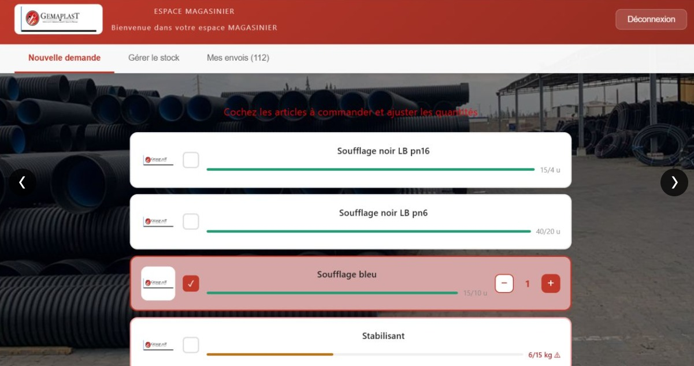
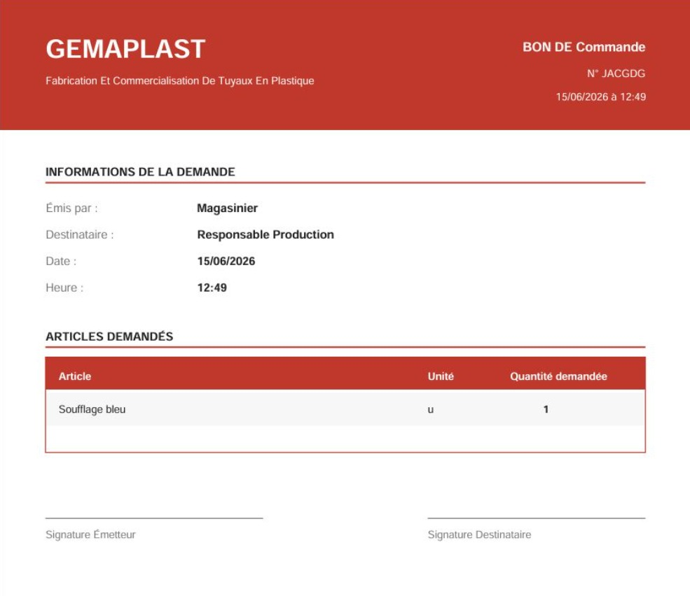
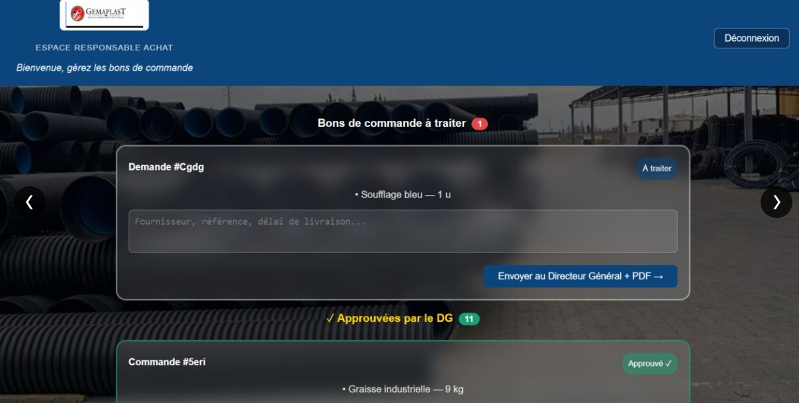
Stage effectué dans Gemaplast
Leader en fabrication et commercialisation des tuyaux en plastique.
- Contribution à l'amélioration et à la digitalisation du processus d'approvisionnement de l'entreprise.
- Conception et développement d'une application web permettant de digitaliser le flux d'approvisionnement, du magasinier jusqu'au fournisseur, en remplaçant un processus manuel basé sur le papier par un circuit numérique en temps réel.
- Développement de l'interface utilisateur avec React et mise en place du backend avec Firebase, Node.js et Vite.
- Gestion de la base de données, de l'authentification des utilisateurs et du déploiement de l'application via Firebase Hosting.
- Participation à la gestion opérationnelle des demandes d'approvisionnement, à la création et au suivi des commandes fournisseurs ainsi qu'au contrôle de leur état d'avancement.
- Contribution au suivi des achats, à la transmission des commandes aux fournisseurs et à la coordination entre le magasin et le service approvisionnement afin d'assurer la disponibilité des matières premières.
- Collaboration avec les différents services pour analyser les besoins, optimiser le processus d'achat et réduire les délais de traitement.
- Travail en équipe dans un environnement industriel en appliquant les principes de digitalisation et d'amélioration continue.
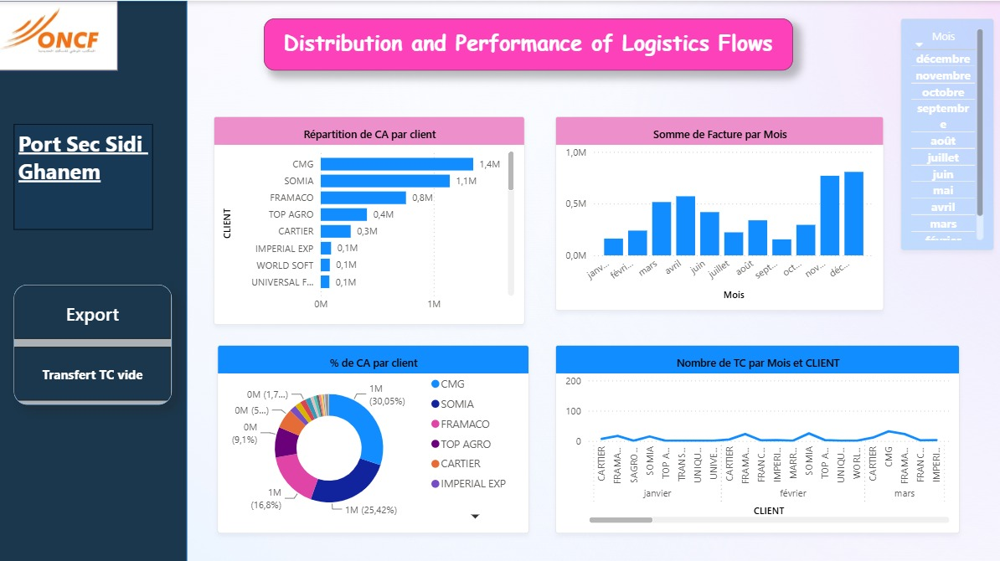
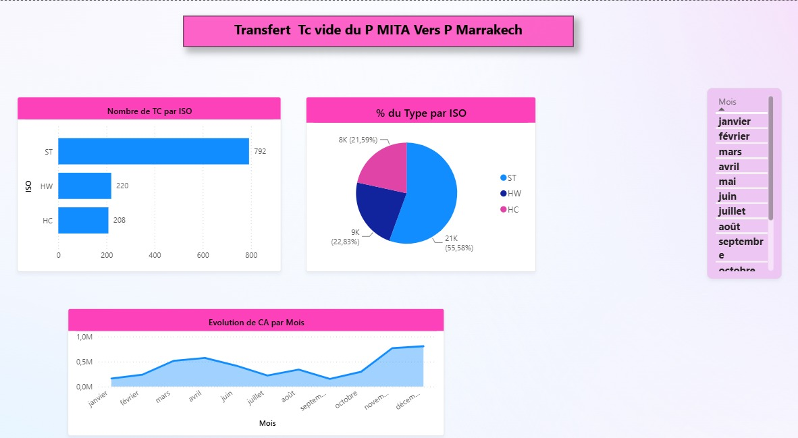
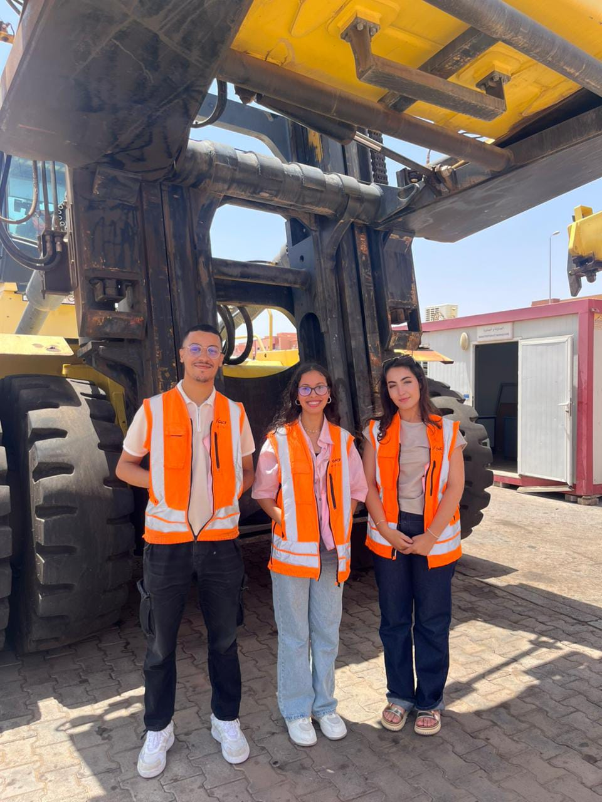
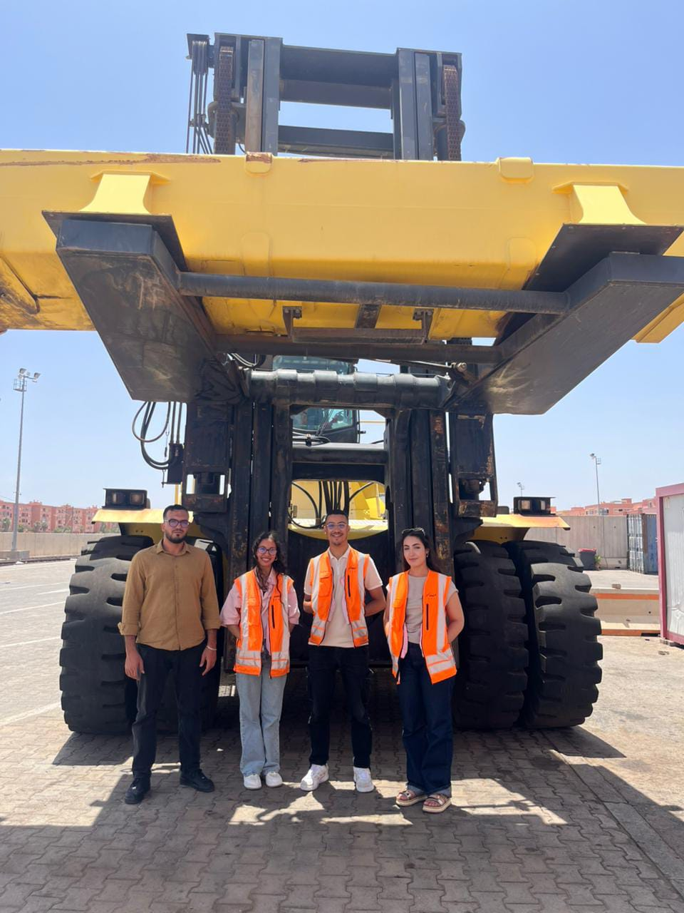
Stage effectué dans ONCF
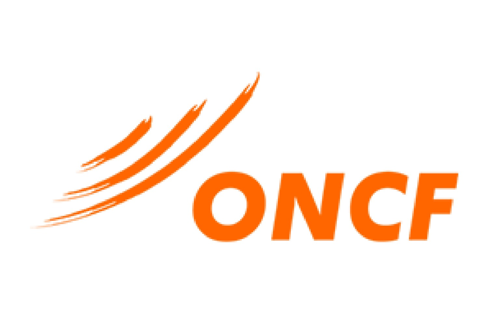
Août 2025Office National des Chemins de Fer.
- Participation à l'analyse et à l'optimisation des flux logistiques d'import et d'export.
- Réalisation d'un état des lieux des opérations de manutention et de gestion des conteneurs.
- Conception d'un système de traçabilité des conteneurs basé sur des QR Codes.
- Développement d'un tableau de bord interactif sous Power BI pour le suivi des flux logistiques et des indicateurs de performance.
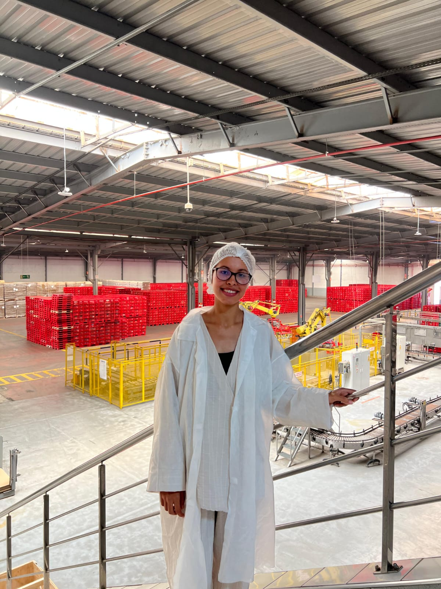
Stage effectué dans CBGS
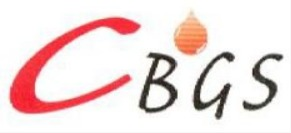
Juillet 2025COMPAGNIE DES BOISSONS GAZEUSES DU SUD.
- Découverte et analyse du fonctionnement des lignes de production.
- Observation des procédures de contrôle qualité appliquées tout au long du processus.
- Participation au suivi des indicateurs de performance et des normes de sécurité.
- Familiarisation avec les équipements industriels et les principes de l'amélioration continue.